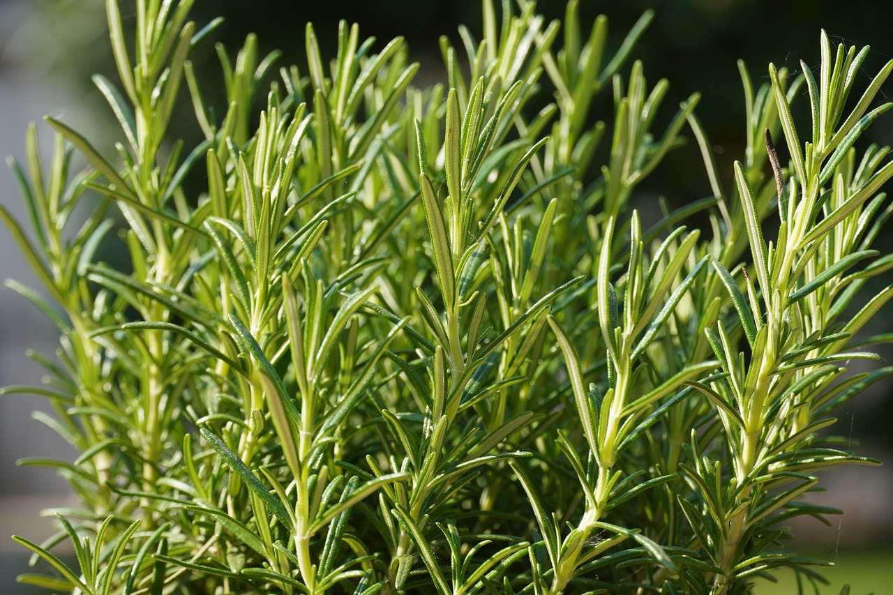

Brasseur amateur depuis 4 années
C’est suite à un cadeau, consistant à participer à une journée découverte du brassage chez un brasseur artisanal local : LA TËTE DE CHOUX,
que l'envie m’as pris de m'équiper et de tenter l'expérience en solo.
Mes premiers brassins étant plutôt encourageants , je suis aujourd’hui à plus de 30 bières brassées.
Toutes différentes car je modifie toujours quelque chose dans mes recettes, rien que de jouer pour une même recette sur la durée,la température d'empâtage, donne une bière différente. Alors avec le houblon et les épices les possibilités sont quasi infinies.
Sur ce blog je partage quelques info, n’hésite pas a me contacter pour échanger sur le contenu ou autres.
mon materiel
*cliquer sur image pour defiler materiel*
cuve de brassage electrique
mon materiel
*cliquer sur image pour defiler materiel*
fermenteur
mon materiel
*cliquer sur image pour defiler materiel*
capsuleuse
mon materiel
la triple?
.jpg)
Simple, double ou triple, ces bières sont toutes fabriquées au sein d’un monastère.
Historiquement, la triple était destinée aux convives. Plus fortes et contenant plus de malt, celle-ci était reconnue pour son degré d’alcool plus important (généralement supérieur à 7 °).
L’origine de cette appellation est discutée.
Certains évoquent la brasserie de l’Abbaye de Westmalle, produisant pour la première fois une telle bière en 1934 une première Triple tandis que d’autres sources datent cette fabrication à l’époque du Moyen-Age.
Cependant, la recette est toujours identique.
La Triple fait appel à des ingrédients en plus fortes quantités. Le brassin est ainsi composé de volumes de malts (et par conséquent de sucre et d’amidon).
A présent, vous savez qu’est ce qu’une bière triple.
Celle-ci se décline en de nombreuses références et peut également être appelée tripel.
(source:Saveur Biere)
ma derniere recette
Voici la recette de ma dernière création au romarin pour un brassin de 30l.
- Ingredients:
- Empatage:1h30
- Ebullition: 1h
- Fermentation :
Malt : Pale Ale 1kg
Cara 1Kg
Blé 3kg
Levure : Fermentis WB06
Houblon Cristal : 25gr
Romarin : 8gr
Ajout de Houblon : 25gr de Cristal "5min en fin d'ébu"
Ajout de Romarin : 8gr "5min en fin d'ébu"
Après refroidissement 20-25 degrés max
Ajout de la levure en fermenteur 1 semaine à 18-20degrés 3 semaines à 14-16 degrés
2400 microBrasserie
.jpg)
Les Brasseries artisanales sont au nombre de 2400 à fin 2021, elles n’étaient que 200
en 2007.
Aujourd’hui, il en existe dans toutes les régions.
Leur production représente environ 10 % du marché en France. Elles ont dynamisé un marché en baisse
pendant trente ans.
Elles ont apporté la dimension artisanale,
réveillé les terroirs, les saveurs et les palais.
La bière se veut locale,
élaborée à partir de matières premières produites sur place et consommée dans la région,
ce que recherche avant tout le consommateur.
(source: le rigal de la biere)